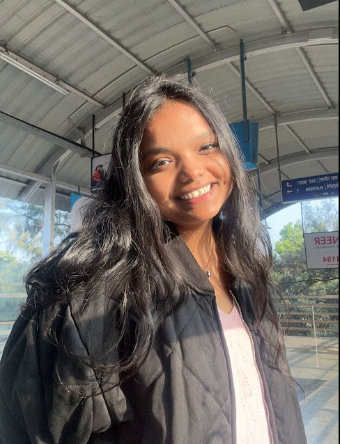

Greetings!
I'm a 19-year-old college student, currently diving into the world of Computer Science at D.G. Ruparel College of Arts, Commerce, and Science. My educational journey began at Children's Academy, where I performed well academically.
Transitioning to Thakur College of Science, Commerce, and Arts, I continued my quest for knowledge. Computer science is my passion, and I approach my studies with great enthusiasm.
Beyond academics, I'm a curious and creative individual who loves expressing myself through writing, painting, and music. Challenges don't faze me – I tackle them with a positive mindset until I conquer them.
Empathy and kindness are my guiding principles. I strive to spread joy and make a positive impact wherever I go. Learning is a lifelong journey, and I'm always eager to explore new things and gain fresh experiences..
In the realm of web development, I've had two significant experiences. The first was a remote internship with a Pune-based company, offering a deep dive into the world of developers. The second involved freelancing/full-time work with a company in Odisha, providing insights into corporate life over a span of 2-3 weeks.
I'm an adventurous soul, always excited to explore the unknown and view each day as an opportunity for growth.
Let's go on this exciting journey together, making the most of every moment and creating meaningful connections in our shared human experience.